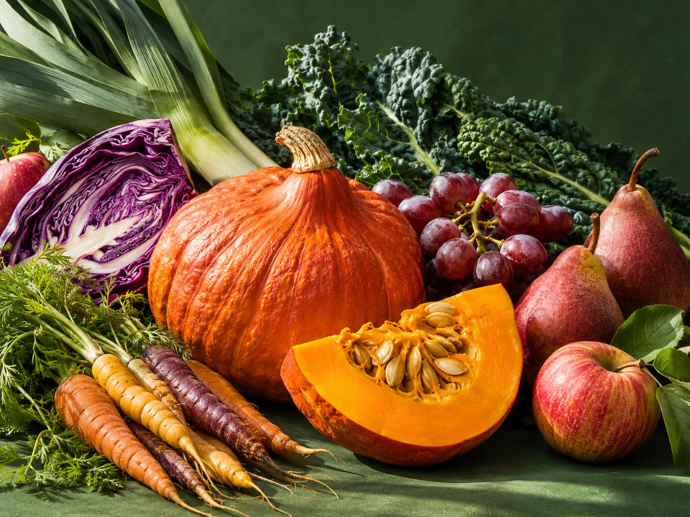

Aller au contenu
Pleine Saison
Le calendrier
Les terroirs
En cuisine
Au marché
Mes favoris
Pleine
Saison.
Les fruits et légumes au fil des mois, de nos terroirs à votre assiette.
Voir le calendrier
Explorer les terroirs

Automne
Printemps
Été
Automne
Hiver
Nature morte de saison